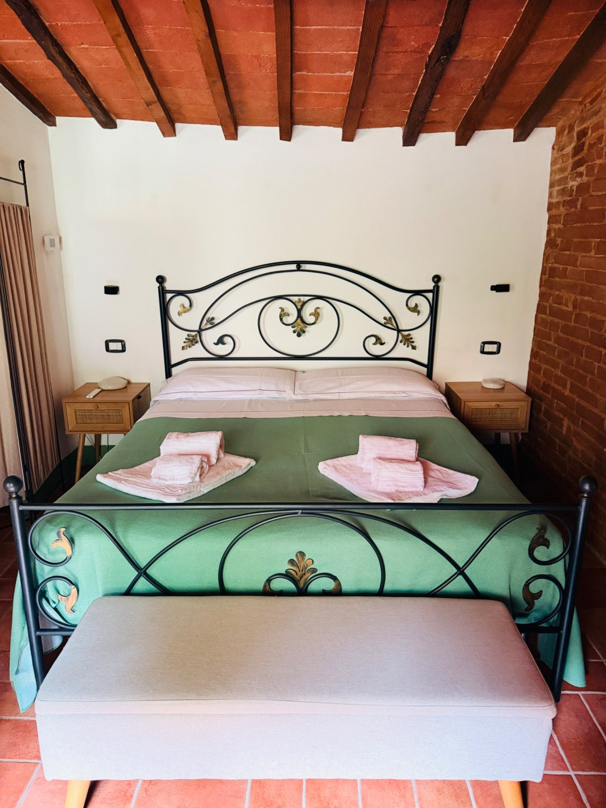
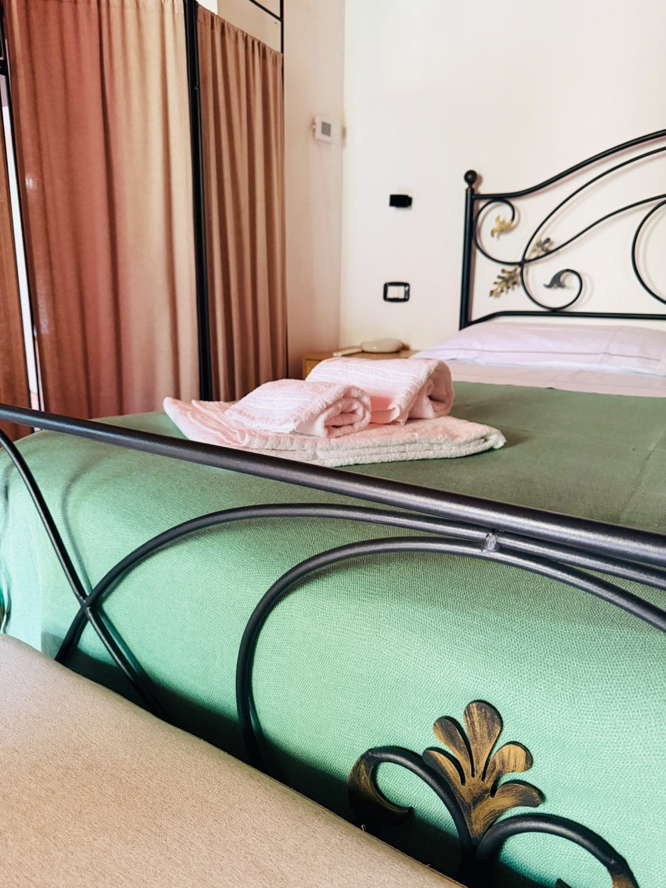
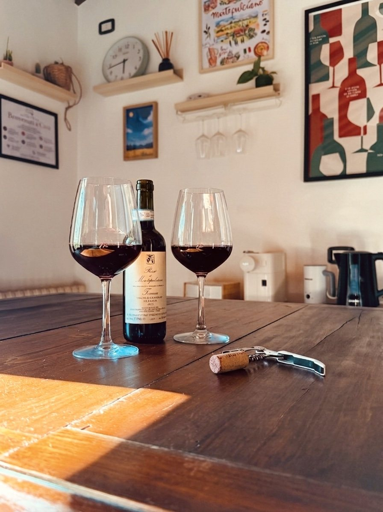
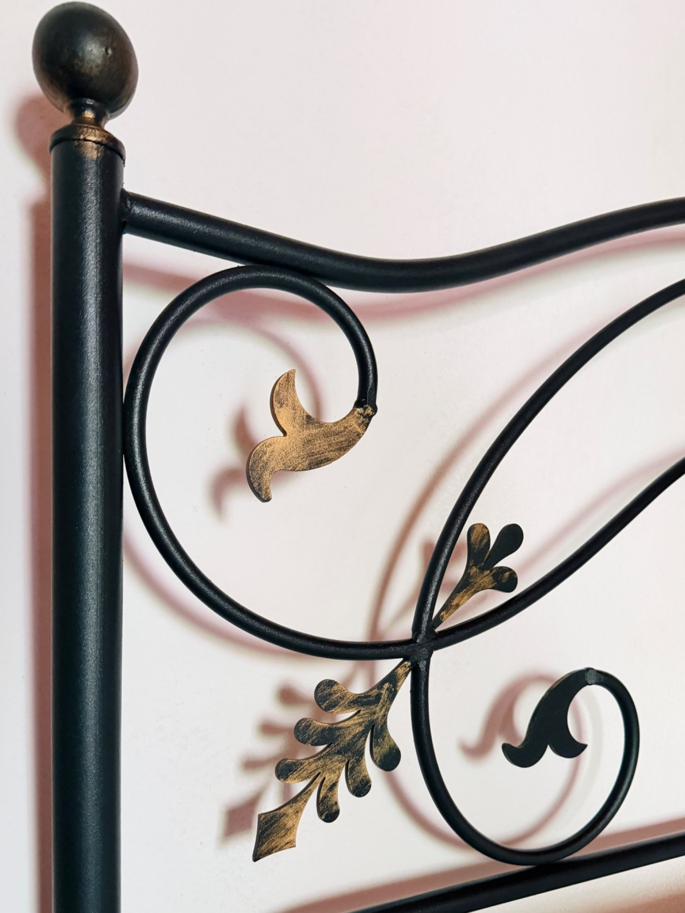

Un weekend romantico a Montepulciano.
Montepulciano si presta naturalmente a un soggiorno di coppia: passeggiate nel centro storico, vino, scorci sulla campagna toscana e il piacere di rientrare in una casa raccolta nel cuore del borgo.
Due giorni da vivere senza fretta.
Una passeggiata verso Piazza Grande e la Fortezza permette di scoprire il centro prima che si riempia, fermandosi per un caffè o una colazione lungo il percorso.
Enoteche, cantine e ristoranti fanno parte dell'esperienza di Montepulciano. Soggiornare in centro permette di goderseli senza organizzare ogni spostamento in auto.
Le ore serali restituiscono al borgo un ritmo più quieto. Tornare a casa a piedi rende il soggiorno più semplice e spontaneo.
Per chi resta più di una notte, Pienza, Monticchiello, Bagno Vignoni e San Quirico d'Orcia sono mete naturali per una giornata fuori.
Il Nido di Sofì per una coppia.
Camera matrimoniale, ampio soggiorno con cucina attrezzata e bagno con doccia, in un ambiente toscano con cotto e travi a vista.
La posizione in Via del Poliziano permette di raggiungere a piedi Piazza Grande, Fortezza, ristoranti ed enoteche.
Self check-in, Wi‑Fi veloce e cucina rendono semplice gestire il soggiorno con i propri tempi.


Una piccola dimora toscana per due.
Invia le date desiderate e verificheremo personalmente disponibilità e totale del soggiorno.
Richiedi disponibilità